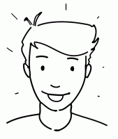
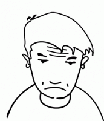

Ne/pas, ne/ni/ni + articles

Deux visions de l’école maternelle. Ali est optimiste; Karim est pessimiste. Cliquez "Suite" pour voir la première phrase d’Ali. Karim refait chaque phrase d’Ali au négatif. Ecrivez la réponse de Karim, en faisant tous les changements nécessaires.
Cliquez "Montrer" pour comparer votre réponse à la réponse du professeur.
Cliquez "Cacher" pour faire disparaître la réponse du professeur.
Cliquez Suite/Retour pour voir les autres phrases d’Ali.
|
Votre réponse |
Réponse du professeur |